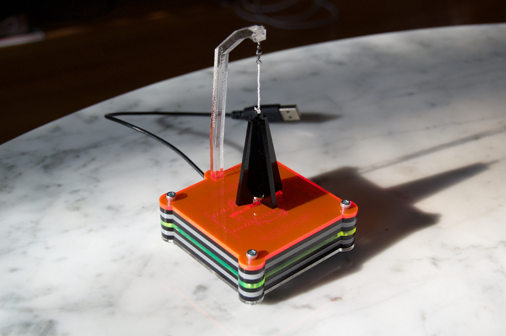

netChimes
A globally distributed, wind-actuated instrument
Introduction
netChimes is a wind-actuated instrument comprised of a collection of 20 globally-distributed wind chime sensors. These sensors are connected via the Internet to a collection of physical chimes (a carillon of sorts) located at a public venue. When a remote sensor is triggered by the wind, a corresponding chime is struck at the installation site. As conceived, the installation sonifies and visualizes ambient wind activity, rendering those intangible things — the Internet, the global village, the wind — tangible. The interactive map below displays live data from the netChimes sensor network, visualizing the locations and activity of each netChimes sensor in real-time with a corresponding audible chime strike.
Background

The netChimes project evolved out of research I conducted from 2010 to 2012 related to the World Opera Project, an EU funded initiative to interconnect global stages with high-bandwidth audio and video streaming systems. The goal of this project was to afford musicians, actors, dancers, and audiences the ability to engage in iteractive, real-time distributed performances across the network.
Though network latency was perhaps the greatest hindrance to such mediated performances, the inability of local performers to physically affect the remote spaces (and vice versa) left artists feeling somewhat estranged. Lovers could not kiss, dancers could not touch, and actors could not upstage one another.
netChimes captures local ambient activity (the wind) and relays this activity to a remote venue where that activity is realized by striking a chime, plucking a string, or throwing a switch. As such, netChimes provides a digital conduit, a connection between the initial creation and eventual realization of the performance event.
The sensor array
The first stage of the project entails the construction and distribution of 20 netChimes sensors around the planet. With the generous support of a Part-time Faculty Development Grant from Columbia College Chicago this process is underway with array currenlty being deployed.
 The netChimes sensor is a small, lightweight ambient sensor developed for this global installation project. When the sensor arrives at its destination, the sponsor (or chimekeeper) connects the sensor to a local Wi-Fi network and places it on a window sill or similar outdoor space.
The netChimes sensor is a small, lightweight ambient sensor developed for this global installation project. When the sensor arrives at its destination, the sponsor (or chimekeeper) connects the sensor to a local Wi-Fi network and places it on a window sill or similar outdoor space.
Each sensor contains a circuit board holding a ring of six magnetic (Hall) switches. A small magnet in the base of the sail trips the switches, registering a chime strike as the sail is stirred by the wind. The underside houses a microprocessor to read the sensors and a Wi-Fi module to communicate with the network. The unit is water/weather resistant.
The installation
At present, netChimes is a network of globally-distributed wind chime sensors relaying realtime activity to the netChimes server. This acitivity is sonified and visualized on this site. As the first set of sensors is deployed this winter, I will begin working on the second part of the installation, the large carillon and complementary interactive illuminated and projected components. The video above provides a walk through for the proposed installation. I intend to begin work on the installation Summer 2016.
Chimekeepers, those who host a chime sensor, are given access to the network's feeds for use in their own creative projects. In the near future, I hope to see a variety of creations driven by the netChimes network. As the project progresses, this page will be updated and open source designs for sensors and chime sets will be released. If you have questions or wish to become involved in the project, please email me here.